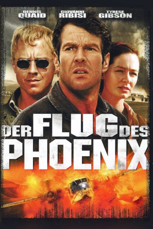

#2147 Der Flug des Phoenix
Alternativ: Flight of the Phoenix
 
 IMDB-Wertung: 6.1 / 10
IMDB-Wertung: 6.1 / 10  Metascore: 47
Metascore: 47 
US-amerikanischer Abenteuerfilm aus dem Jahr 2004, Remake des gleichnamigen Films aus dem Jahr 1965. Beide Filme basieren auf dem Roman "The Flight of the Phoenix" von Elleston Trevor aus dem Jahr 1964. Über der Wüste Gobi stürzt ein Flugzeug mit Ölarbeitern ab. Die Wasservorräte reichen nur für zwei Tage, es beginnt ein Kampf ums Überleben.
Jahr: 2004
Dauer: 113 Minuten
FSK: 12
Land: USA Studio: 20th Century FoxTonspuren:
Untertitel:
Auflösung: 1080p (1920x816) Größe: 8140 MB
Genre: Action, Thriller, Drama, Abenteuer
Regisseur: John Moore
Drehbuch: Lukas Heller, Scott Frank, Edward Burns
Soundtrack: Marco Beltrami
Darsteller:
Datei: X:\2004(A-F)\Flug des Phoenix, Der (2004, FSK12, 1920x816).mkv seit 08.10.2015
Festplatte: HD 2003-2004-2005(A-F)
 Es gibt insgesamt 39 Filme in der Gruppe '2004(A-F)'
Es gibt insgesamt 39 Filme in der Gruppe '2004(A-F)'